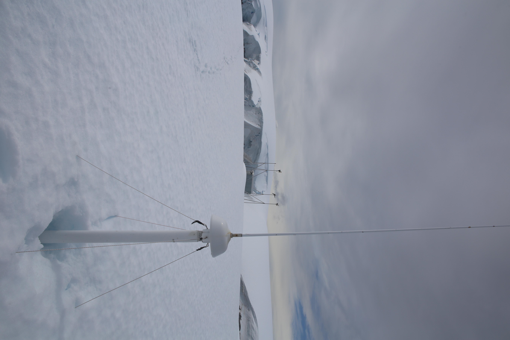
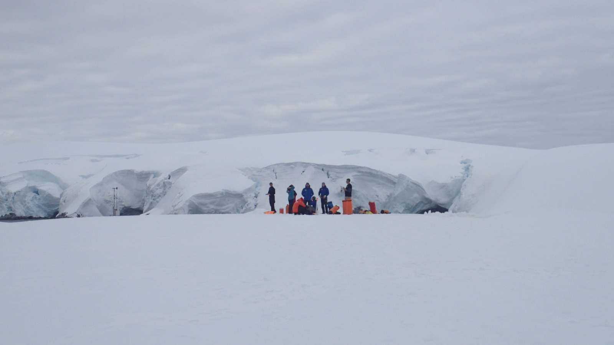

Research Interests
- Lagrangian coherent structures, FTLE, and FSLE
- Ocean fronts, eddies, and shelf-slope exchange
- Biological–physical interactions in marine food webs
- High-frequency radar, satellite altimetry, and ocean observing
- Coastal and polar oceanography
Selected Publications
https://doi.org/10.1029/2025JC022447
https://doi.org/10.1029/2024JC022101
https://doi.org/10.1038/s43247-025-02101-x
https://doi.org/10.1093/icesjms/fsae036
Featured Figures

Lagrangian transport features and finite-time Lyapunov exponent structure.

Ocean fronts, circulation, or biological–physical interaction example figure.

Fieldwork, ocean observing, or research image from recent projects.
Teaching & Outreach
I teach and develop programming, oceanography, and marine technology learning experiences for students ranging from high school to graduate level.
- Programming in Earth Science Classrooms Educational Workshop
- Python for Climate Science Workshop Instructor
- High school Computer Science instructor at Falmouth Academy
- Marine Technology Society micro-credential guest lecturer
- Public outreach in marine science and ocean observing
Field Experience
My field experience includes Arctic fjord work aboard the RV Marie Tharp, early-career chief scientist training aboard the USCGC Healy, Antarctic field seasons at Palmer Station, glider operations, high-frequency radar deployments, CTD casts, plankton sampling, and small-boat surveys.